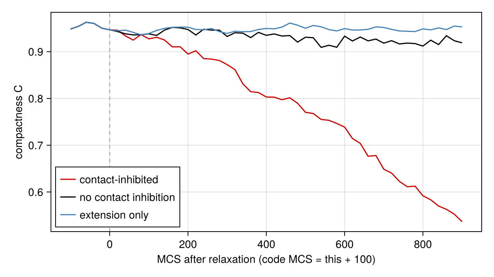
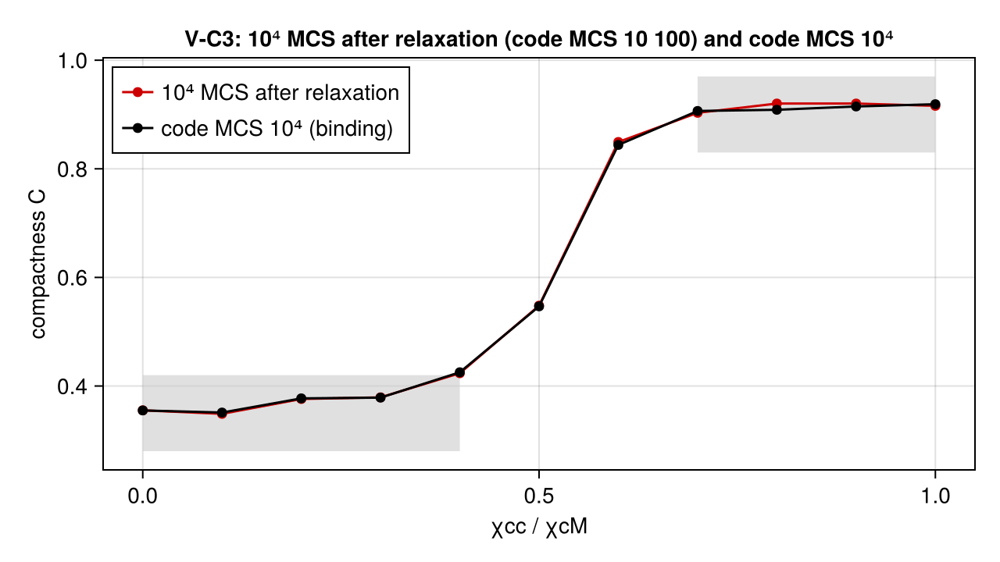

Reproducing Merks et al. (2006, 2008): vasculogenesis by elongation and contact-inhibited chemotaxis
(prose: draft) The text on this page is a placeholder written with the code; a separate pass will revise it. Every number about our runs is computed on this page when the docs are built. Values quoted from the papers carry a citation.
The docs build runs the reduced (SMOKE) set: a density-matched 200² version of the 2006 run, 1000-MCS sprouts and short random walks. Only the rows of class SMOKE+FULL carry a verdict there; those tables are a smoke check, not validation. The full run (every READY row at the paper's size and replicate counts, 590 runs; offline, D-146) is committed as lib/PottsModels/reproductions/data/01/full-2026-10-08/: commit 3f1c441a, made on an AMD Ryzen AI Max+ 395 (praneeth-NucBox-EVO-X2, CPU backend, 12 threads). Its verdicts are read from that record on this page, class "FULL record" in §5. Two of its replicates, rerun with dense saves and checked against the record's snapshots, are videos with one colour per cell: the 2006 network, seed 1001 and the 2008 contact-inhibited sprout, seed 3101.
1. Paper and sources
- 01a. R.M.H. Merks, S.V. Brodsky, M.S. Goligorsky, S.A. Newman, J.A. Glazier, "Cell elongation is key to in silico replication of in vitro vasculogenesis and subsequent remodeling", Developmental Biology 289, 44–54 (2006). doi:10.1016/j.ydbio.2005.10.003. Read in the version of record; the PMC author manuscript (PMC2562951) has the same text for every value used here. The supplementary methods cited in the Fig. 2 caption could not be located.
- 01b. R.M.H. Merks, E.D. Perryn, A. Shirinifard, J.A. Glazier, "Contact-Inhibited Chemotaxis in De Novo and Sprouting Blood-Vessel Growth", PLoS Comput. Biol. 4(9), e1000163 (2008). doi:10.1371/journal.pcbi.1000163. Read in the version of record.
- Erratum status: none recorded in the spec; not checked against the journals.
- Released code: Tissue Simulation Toolkit 0.1.3 (01b Protocol S1) and the 12 parameter files of 01b Dataset S1. No code was released with 01a; the TST files headed "Cf. Fig. 4 of Merks et al. 2006" are 2008-release values, assumed for 2006 (spec 01 §7.8).
- Spec:
docs/design/research/model-specs/01_merks.md(§2, §3, §5, §7, §8); decisions D-050 M1–M11 (model-specs README §4.1), D-087, D-145, D-153. - Reproducibility grade: A for 2008 (Dataset S1 and TST fix every parameter of the Figs. 5–11 runs) and C for 2006 (λ, A, λ_L, E₀, the field boundary and scheme are absent from the paper; the target length conflicts with the files).
Merks et al. (2006) show that autocrine chemotaxis alone gathers endothelial cells into round islands, and that elongated cells instead form a polygonal network that coarsens slowly, as in vitro. Merks et al. (2008) replace elongation with contact inhibition: chemotaxis acts only at cell–matrix interfaces, which makes a dispersed population form a network and a compact cluster sprout. This page reproduces both, from two published constructors that share no parameter values (spec 01 §8 A-17).
using Potts, PottsModels
using MakiePotts, CairoMakie
using Statistics: mean, std
using Markdown
using TOML
CairoMakie.activate!(type = "png")
const FULL = get(ENV, "POTTS_FULL_REPRODUCTION", "false") == "true"
const SOLVER = ExplicitEuler(substeps = 15) # 15 × Δt = 2 s per MCS (01a p.49; 01b p.12)The committed full-run record (D-146) is read here, not rerun: its verdicts, the frozen FULL rules applied to its 590 per-replicate rows, and the sweep means at both clocks.
# FULL record (P6.3f): begin
const RECORD = joinpath(pkgdir(PottsModels), "reproductions", "data", "01", "full-2026-10-08")
function record_tsv(file)
lines = filter(!isempty, readlines(joinpath(RECORD, file)))
head = split(lines[1], '\t')
return [Dict(String(h) => String(v) for (h, v) in zip(head, split(l, '\t'; keepempty = true))) for l in lines[2:end]]
end
record_prov = TOML.parsefile(joinpath(RECORD, "provenance.toml"))
record_verdicts = record_tsv("verdicts.tsv")
record_points = record_tsv("points.tsv")
record_causes = record_tsv("deviations.tsv") # cause and question status of each failing check
full_verdicts_md = "| Target | Paper | Ours | Tolerance | Class | Result |\n|---|---|---|---|---|---|\n" *
join(["| $(v["row"]) $(v["check"]) | $(v["paper"]) | $(v["ours"]) | $(v["rule"]) | FULL record | $(v["result"]) |"
for v in record_verdicts], "\n")
function deviation_row(v)
c = findfirst(d -> d["row"] == v["row"] && d["check"] == v["check"], record_causes)
cause = c === nothing ? "not yet diagnosed" : record_causes[c]["suspected_cause"]
status = c === nothing ? "not an author question" : record_causes[c]["author_question"]
return "| $(v["row"]) $(v["check"]) (FAIL; full run) | $(v["ours"]) | $(v["paper"]) | $cause | $status |"
end
full_deviation_rows = [deviation_row(v) for v in record_verdicts if v["result"] == "FAIL"]
# FULL record (P6.3f): end2. The model, term by term
Both models are ordinary @potts_model constructors. The terms, with their sources:
| Source | Merks2006 (Variant E) | Merks2008 (Variant CI) |
|---|---|---|
| adhesion Σ J(1 − δ) (01a Eq. 1; 01b Eq. 2) over "the eight second-order neighbors" (01a p.47) / "twenty, first- to fourth-nearest neighbors" (01b p.11) | contacts => J[kind, kind′] on Moore(1) | contacts => J[kind, kind′] on NeighborOrder(4) |
| area λ(a − A)² (01a Eq. 1; 01b Eq. 2) | cells(endothelial) => λ * (volume - A)^2 | same |
| length λL(l − L)², l = 4√(λmax/a) (01a Eq. 4, Eq. 5, p.48–49) | + λ_L * (major_length - L)^2 | — (no length term, Dataset S1 lambda2 = 0) |
| chemotaxis −χ(f(c(x′)) − f(c(x))), f(c) = c/(1 + s c) (01a Eq. 2; 01b Eq. 3) | χ(c,M) = χ(c,c) = γ = 1000: every copy (spec A-7) | χ(c,M) = 500 at cell–medium copies, χ(c,c) = 0 (contact inhibition) |
| extension-only chemotaxis (01b Eq. 4) | — | mode = :extension_only |
| connectivity penalty E₀ on ring-breaking copies of the losing cell (01a p.49; ca.cpp:442-448, :1166-1226) | @drive copy => E₀ * <TST ring test>, E₀ = 5000; rule = :hard vetoes instead | — (conn_diss = 0) |
| frozen border B, J(c,B) = 100 (01a p.48; 01b p.11), J(M,B) = 0 (ca.cpp:236-238) | border[frozen], 1-site Frame | 2-site Frame on 202² (TST's stencil reaches the off-lattice ring) |
| ∂c/∂t = α[cell] − ε c[ECM] + D∇²c (01b Eq. 1; 01a Eq. 6 as prose, A-4) | D(c) ~ Dc * Δ(c) + α * (kind == endothelial) - ε * c * (kind == medium) | the same, off for the first t_relax MCS |
| absorbing c = 0 ring, c₀ = 0 (pde.cpp:104-106, :189-194) | @boundary c begin sites(kind == border) => Dirichlet(0.0) end | same |
| 15 diffusion steps of Δt = 2 s per MCS, before the CPM sweep (01a p.49; vessel.cpp:86-94) | @schedule fields, sweep and field_solver = ExplicitEuler(substeps = 15) | same |
relaxation: 100 MCS without the field (Dataset S1 relaxation = 100; not in the paper) | — | t_relax = 100 |
| Metropolis at T = 50 (01a p.48; 01b p.11) | @sweep Metropolis(; temperature = T) | same |
The parameters, read from the constructed problems (lattice units: Δx = 2 µm, 1 MCS = 30 s):
frame_op(dims, w) = (σ = zeros(Int32, dims); for I in CartesianIndices(σ)
(min(I[1], I[2], dims[1] + 1 - I[1], dims[2] + 1 - I[2]) <= w) && (σ[I] = 1)
end; [ownership => σ, kind => [:border]])
p06 = PottsProblem(Merks2006(; name = :m6, lattice = (20, 20)), frame_op((20, 20), 1), (0, 1); field_solver = SOLVER)
p08 = PottsProblem(Merks2008(; name = :m8, lattice = (20, 20)), frame_op((20, 20), 2), (0, 1); field_solver = SOLVER)
v6(n) = getp(p06, n)(p06)
v8(n) = getp(p08, n)(p08)
J6, J8 = v6(:J), v8(:J)
Markdown.parse("""
| Symbol | 2006 | 2008 | Units | Meaning | Source | Status |
|---|---|---|---|---|---|---|
| J(c,c), J(c,M), J(c,B), J(M,B) | $(J6[2, 2]), $(J6[1, 2]), $(J6[2, 3]), $(J6[1, 3]) | $(J8[2, 2]), $(J8[1, 2]), $(J8[2, 3]), $(J8[1, 3]) | energy | adhesion | 01a p.48; 01b p.11; J(M,B) ca.cpp:236-238 | stated; J(M,B) code-only |
| T | $(v6(:T)) | $(v8(:T)) | energy | temperature | 01a p.48; 01b p.11 | stated |
| λ | $(v6(:λ)) | $(v8(:λ)) | energy/site² | area strength | longcells.par:9 (2006); 01b p.11 | 2006: code, assumed |
| A | $(v6(:A)) | $(v8(:A)) | sites | target area | longcells.par:7 (2006; inferred from 01a Fig. 8); 01b p.11 | 2006: code, assumed |
| λ_L | $(v6(:λ_L)) | — | energy/site² | length strength | longcells.par:10 | code, assumed |
| L | $(v6(:L)) | — | sites | target length, "about 100 µm" | 01a p.50 (60 in longcells.par:8: author question) | stated (text) |
| E₀ | $(v6(:E₀)) | — | energy | connectivity penalty | 01a p.49 "E0 > 2000"; longcells.par:12 | code (5000), D-050 M3 |
| χ(c,M), χ(c,c) | $(v6(:χcM)), $(v6(:χcc)) | $(v8(:χcM)), $(v8(:χcc)) | energy/conc. | chemotaxis | 01a Eq. 2 (γ); 01b p.12 | stated |
| s | $(v6(:s)) | $(v8(:s)) | 1/conc. | saturation | 01b p.12 | stated |
| D | $(v6(:Dc)) | $(v8(:Dc)) | sites²/MCS | 10⁻¹³ m² s⁻¹ × 30 s / (2 µm)² | 01a p.49; 01b p.3 | derived |
| α = ε | $(v6(:α)) | $(v8(:α)) | 1/MCS | 1.8·10⁻⁴ s⁻¹ (2006), 10⁻³ s⁻¹ (2008), × 30 s | 01a p.49; 01b p.3 | derived |
| t_relax | — | $(v8(:t_relax)) | MCS | relaxation without the field | sprout_*.par:40 | code-only (D-050 M6) |
| lattice | 500 × 500, frame 1 | 202 × 202, frame 2 | sites | domain incl. frozen frame | 01a Fig. 4; sprout_*.par:34-35 | stated / code |
""")| Symbol | 2006 | 2008 | Units | Meaning | Source | Status |
|---|---|---|---|---|---|---|
| J(c,c), J(c,M), J(c,B), J(M,B) | 40.0, 20.0, 100.0, 0.0 | 40.0, 20.0, 100.0, 0.0 | energy | adhesion | 01a p.48; 01b p.11; J(M,B) ca.cpp:236-238 | stated; J(M,B) code-only |
| T | 50.0 | 50.0 | energy | temperature | 01a p.48; 01b p.11 | stated |
| λ | 50.0 | 25.0 | energy/site² | area strength | longcells.par:9 (2006); 01b p.11 | 2006: code, assumed |
| A | 100.0 | 50.0 | sites | target area | longcells.par:7 (2006; inferred from 01a Fig. 8); 01b p.11 | 2006: code, assumed |
| λ_L | 5.0 | — | energy/site² | length strength | longcells.par:10 | code, assumed |
| L | 50.0 | — | sites | target length, "about 100 µm" | 01a p.50 (60 in longcells.par:8: author question) | stated (text) |
| E₀ | 5000.0 | — | energy | connectivity penalty | 01a p.49 "E0 > 2000"; longcells.par:12 | code (5000), D-050 M3 |
| χ(c,M), χ(c,c) | 1000.0, 1000.0 | 500.0, 0.0 | energy/conc. | chemotaxis | 01a Eq. 2 (γ); 01b p.12 | stated |
| s | 0.0 | 0.0 | 1/conc. | saturation | 01b p.12 | stated |
| D | 0.75 | 0.75 | sites²/MCS | 10⁻¹³ m² s⁻¹ × 30 s / (2 µm)² | 01a p.49; 01b p.3 | derived |
| α = ε | 0.0054 | 0.03 | 1/MCS | 1.8·10⁻⁴ s⁻¹ (2006), 10⁻³ s⁻¹ (2008), × 30 s | 01a p.49; 01b p.3 | derived |
| t_relax | — | 100.0 | MCS | relaxation without the field | sprout_*.par:40 | code-only (D-050 M6) |
| lattice | 500 × 500, frame 1 | 202 × 202, frame 2 | sites | domain incl. frozen frame | 01a Fig. 4; sprout_*.par:34-35 | stated / code |
Units. One site is 2 µm × 2 µm; one MCS is 30 s (01a p.50; 01b p.11), the 15 field substeps of 2 s. One of our MCS is one copy attempt per mobile site, the frozen frame excluded: (500 − 2)² = 248 004 attempts on the 2006 lattice (1-site frame) and (202 − 4)² = 39 204 on the 2008 one (2-site frame). That is exactly TST's (sizex − 2)(sizey − 2) attempts per MCS (ca.cpp:385) on its 500² and 200² lattices, so the attempt count is not a deviation (D-153 review correction).
Clocks (D-156). The 2008 runs relax for 100 MCS without the field. Plots of 2008 runs use the time from the end of relaxation as their primary axis; the code's MCS counter (TST's loop counter) is that time + 100, noted on each axis. The pass/fail rows bind on the code counter, as frozen (D-153; spec 01 §8 A-19), and the full run also reports them at the end-of-relaxation reading.
3. Deviations
The field scheme row is measured here: one MCS of the field on a developed 2008 sprout state, our unsplit Euler substep against TST's split one (secretion/decay, then diffusion; vessel.cpp:151-168, pde.cpp:178-219), written out on this page.
function field_mcs(c, σ, p; split)
X, Y = size(c)
h = 1 / 15
ec, med, ring = σ .>= 2, σ .== 0, σ .== 1
lap(c, x, y) = sum(((a, b),) -> (1 <= x + a <= X && 1 <= y + b <= Y) ? c[x + a, y + b] - c[x, y] : 0.0,
((1, 0), (-1, 0), (0, 1), (0, -1)))
for _ in 1:15
if split
r = c .+ h .* (p.α .* ec .- p.ε .* c .* med)
c = [r[x, y] + h * p.Dc * lap(r, x, y) for x in 1:X, y in 1:Y]
else
c = [c[x, y] + h * (p.Dc * lap(c, x, y) + p.α * ec[x, y] - p.ε * c[x, y] * med[x, y]) for x in 1:X, y in 1:Y]
end
c[ring] .= 0.0
end
return c
end
dev_prob = PottsProblem(Merks2008(; name = :m8), layout(merks2008_sprout(; seed = 1), (202, 202)), (0, 600);
field_solver = SOLVER, seed = 1)
dev_u = solve(dev_prob, SequentialCPM(); saveat = [600]).u[end]
dev_c, dev_σ = Float64.(Array(dev_u.site.c)), Int.(Array(dev_u.σ))
dev_p = (; α = v8(:α), ε = v8(:ε), Dc = v8(:Dc))
split_rel = maximum(abs, field_mcs(dev_c, dev_σ, dev_p; split = true) .- field_mcs(dev_c, dev_σ, dev_p; split = false)) /
maximum(dev_c)One row per failed, parked or provisional target and per difference from the papers or the released files (D-154; the rows of D-153's review). The failing checks of the full run are the last rows, read from the record with its diagnosis (deviations.tsv). The columns are our value, the paper's value (with the released files' where they differ), the suspected cause and the status of the question to the authors: "not an author question", "not asked" (the question is on our open question list, model-specs README §5 and §6 below), "asked on ⟨date⟩" or "answered → ⟨D-entry⟩". Provisional defaults ship labelled (D-155).
aq(item) = "not asked (on our open question list: README §5, Merks item $item; §6 below)"
Markdown.parse("""
| Item | Ours | Paper | Suspected cause | Author question |
|---|---|---|---|---|
| 2006 target length L (provisional) | 50 px; variant `Merks2006(; L = 60.0)` | "about 100 µm" = 50 px (01a p.50); 60 px in every 2006-labelled file | the text and the files conflict (D-050 M2) | $(aq(1)) |
| 2006 connectivity E₀ | E₀ = 5000 drive (≡ TST's threshold shift under Metropolis); variants `E₀ = 2000`, `rule = :hard` | soft, "E0 > 2000" (01a p.49); files: `conn_diss` 5000 (`longcells.par`) or 2000 (`default.par`) | the files disagree (spec D-13; D-050 M3, D-140) | $(aq(1)) |
| 2006 seeding | 282 squares of 10² (= A), `merks2006_layout` (`Scattered`, D-087); any layout | 282 cells over 333² of 500², shape unstated; files: 100 point seeds × 10 Eden rounds on 200² | unstated in the paper (D-050 M11; spec A-15) | $(aq(1)) |
| V-E5/V-E6 classification time (provisional) | 48 h (5760 MCS), the last Fig. 4 time | unstated (01a Figs. 6–7) | unstated (D-153 ruling 3; D-155) | not asked (on our open question list: §6 below) |
| 2008 time origin | TST's loop counter, which includes the 100 relaxation MCS; every 2008 value also reported at N + 100 | — (relaxation not mentioned; Dataset S1 `relaxation = 100`) | unstated whether figure times include the relaxation (spec A-19; D-050 M6) | $(aq(2)) |
| 01b Fig. 2 set-up | the paper's: `merks2008_denovo(; lattice = (502, 502), n = 1000, region = (85:417, 85:417))`; the files' as `merks2008_denovo()` | 1000 cells over 333² in a ~500² lattice; files: 360 seeds × 10 Eden rounds on 200² | the enclosing lattice is printed ambiguously (D-050 M10; spec A-9) | $(aq(5)) |
| Field scheme | unsplit explicit Euler, 15 substeps, before the sweep | "finite-difference", 15 steps of 2 s; files: FTCS 5-point, split secretion/decay then diffusion, before the sweep | one MCS differs from the split scheme by $(round(100 * split_rel; digits = 2)) % of max c on a developed sprout, within the scheme's own first-order error (D-050 M5) | not an author question |
| ΔH arithmetic | Float | real; files: integer, each term truncated | performance over exactness (D-050 M9, D-029) | not an author question |
| χ(c,c) | a real parameter (`χcc`) | a continuous ratio swept (01b Fig. 5); files: boolean, χ(c,c) ∈ {0, χ(c,M)} | the sweep's code is not released (D-050 M7; spec A-20) | $(aq(4)) |
| Parameter sets | `Merks2006`, `Merks2008`, no shared values; keywords on either | two papers, two sets (spec A-17); files: `longcells.par` (2006-labelled), Dataset S1 (2008) | none (D-050 M1) | not an author question |
| 2008 seeding | one Eden blob, 50 rounds, 7 divisions → 128 cells (`merks2008_sprout`; variant `divisions = 8`, 256 cells) | "rounded clusters" (01b p.5); the files as ours | none (D-050 M11, D-141) | not an author question |
| Border | 1-site frame (2006); 2-site frame on 202² (2008) | frozen pixels, J(c,B) = 100; files: a 1-px frame, the 20-site stencil reading the off-lattice ring as border | none: the same contacts and attempts (D-050 M4; P6.3e) | not an author question |
| Copy proposal | random source, random target among its neighbours | source among the neighbours of a random target (files the same) | the same ordered-pair law away from the frame (spec D-8) | not an author question |
| Compactness | TST's `Compactness()`: all cell sites over the hull of their centres | A_cluster / A_hull (01b p.5); the files' function is never called | the analysis scripts are not released (spec D-18, A-14) | $(aq(3)) |
| PARKED: V-E2–V-E4 (lacunae and branch points; decay vs in vitro) | not run | 01a Fig. 5 | the 01a morphometry pipeline and its pixel scale are not released (spec A-18) | $(aq(3)) |
| PARKED: V-E7, V-E9 (lacuna size vs cell size; cell speed) | not run | 01a Fig. 8 ("not shown"); ≈ 5 µm/h (01a p.50) | the metric and the measurement interval are not stated | not asked (not yet on our open question list) |
| PARKED: V-E8 (alternative mechanisms) | not run | 01a Figs. 9–10 | the parameter sets conflict with the files (spec D-14, D-15) | not asked (not yet on our open question list) |
| PARKED: V-C6, V-C8, V-C10, V-C11 (cord width; C vs D at 1024 cells; C(t) and ΔH on 500²) | not run | 01b p.8, Figs. 10, 12, 13 | cord width undefined; no 1024-cell or Fig. 12 set-up (spec D-2, A-10); the targets through the continuous-χ superset are ROADMAP P6.3f | $(aq(4)) |
$(join(full_deviation_rows, "\n"))
""")| Item | Ours | Paper | Suspected cause | Author question |
|---|---|---|---|---|
| 2006 target length L (provisional) | 50 px; variant Merks2006(; L = 60.0) | "about 100 µm" = 50 px (01a p.50); 60 px in every 2006-labelled file | the text and the files conflict (D-050 M2) | not asked (on our open question list: README §5, Merks item 1; §6 below) |
| 2006 connectivity E₀ | E₀ = 5000 drive (≡ TST's threshold shift under Metropolis); variants E₀ = 2000, rule = :hard | soft, "E0 > 2000" (01a p.49); files: conn_diss 5000 (longcells.par) or 2000 (default.par) | the files disagree (spec D-13; D-050 M3, D-140) | not asked (on our open question list: README §5, Merks item 1; §6 below) |
| 2006 seeding | 282 squares of 10² (= A), merks2006_layout (Scattered, D-087); any layout | 282 cells over 333² of 500², shape unstated; files: 100 point seeds × 10 Eden rounds on 200² | unstated in the paper (D-050 M11; spec A-15) | not asked (on our open question list: README §5, Merks item 1; §6 below) |
| V-E5/V-E6 classification time (provisional) | 48 h (5760 MCS), the last Fig. 4 time | unstated (01a Figs. 6–7) | unstated (D-153 ruling 3; D-155) | not asked (on our open question list: §6 below) |
| 2008 time origin | TST's loop counter, which includes the 100 relaxation MCS; every 2008 value also reported at N + 100 | — (relaxation not mentioned; Dataset S1 relaxation = 100) | unstated whether figure times include the relaxation (spec A-19; D-050 M6) | not asked (on our open question list: README §5, Merks item 2; §6 below) |
| 01b Fig. 2 set-up | the paper's: merks2008_denovo(; lattice = (502, 502), n = 1000, region = (85:417, 85:417)); the files' as merks2008_denovo() | 1000 cells over 333² in a ~500² lattice; files: 360 seeds × 10 Eden rounds on 200² | the enclosing lattice is printed ambiguously (D-050 M10; spec A-9) | not asked (on our open question list: README §5, Merks item 5; §6 below) |
| Field scheme | unsplit explicit Euler, 15 substeps, before the sweep | "finite-difference", 15 steps of 2 s; files: FTCS 5-point, split secretion/decay then diffusion, before the sweep | one MCS differs from the split scheme by 0.11 % of max c on a developed sprout, within the scheme's own first-order error (D-050 M5) | not an author question |
| ΔH arithmetic | Float | real; files: integer, each term truncated | performance over exactness (D-050 M9, D-029) | not an author question |
| χ(c,c) | a real parameter (χcc) | a continuous ratio swept (01b Fig. 5); files: boolean, χ(c,c) ∈ {0, χ(c,M)} | the sweep's code is not released (D-050 M7; spec A-20) | not asked (on our open question list: README §5, Merks item 4; §6 below) |
| Parameter sets | Merks2006, Merks2008, no shared values; keywords on either | two papers, two sets (spec A-17); files: longcells.par (2006-labelled), Dataset S1 (2008) | none (D-050 M1) | not an author question |
| 2008 seeding | one Eden blob, 50 rounds, 7 divisions → 128 cells (merks2008_sprout; variant divisions = 8, 256 cells) | "rounded clusters" (01b p.5); the files as ours | none (D-050 M11, D-141) | not an author question |
| Border | 1-site frame (2006); 2-site frame on 202² (2008) | frozen pixels, J(c,B) = 100; files: a 1-px frame, the 20-site stencil reading the off-lattice ring as border | none: the same contacts and attempts (D-050 M4; P6.3e) | not an author question |
| Copy proposal | random source, random target among its neighbours | source among the neighbours of a random target (files the same) | the same ordered-pair law away from the frame (spec D-8) | not an author question |
| Compactness | TST's Compactness(): all cell sites over the hull of their centres | Acluster / Ahull (01b p.5); the files' function is never called | the analysis scripts are not released (spec D-18, A-14) | not asked (on our open question list: README §5, Merks item 3; §6 below) |
| PARKED: V-E2–V-E4 (lacunae and branch points; decay vs in vitro) | not run | 01a Fig. 5 | the 01a morphometry pipeline and its pixel scale are not released (spec A-18) | not asked (on our open question list: README §5, Merks item 3; §6 below) |
| PARKED: V-E7, V-E9 (lacuna size vs cell size; cell speed) | not run | 01a Fig. 8 ("not shown"); ≈ 5 µm/h (01a p.50) | the metric and the measurement interval are not stated | not asked (not yet on our open question list) |
| PARKED: V-E8 (alternative mechanisms) | not run | 01a Figs. 9–10 | the parameter sets conflict with the files (spec D-14, D-15) | not asked (not yet on our open question list) |
| PARKED: V-C6, V-C8, V-C10, V-C11 (cord width; C vs D at 1024 cells; C(t) and ΔH on 500²) | not run | 01b p.8, Figs. 10, 12, 13 | cord width undefined; no 1024-cell or Fig. 12 set-up (spec D-2, A-10); the targets through the continuous-χ superset are ROADMAP P6.3f | not asked (on our open question list: README §5, Merks item 4; §6 below) |
| V-C12 displacement ratio CI / no CI (MCS 100 to 19 300) (FAIL; full run) | 1.26 | 85 / 42 µm ≈ 2.0 (01b Fig. 6E) | Ours: CI 68.1 ± 5.9 µm, no CI 54.0 ± 1.9 µm (n = 10 each) against the paper's ≈ 85 and ≈ 42 µm. The paper does not define its displacement (net centroid displacement, as ours, or path length; per cell or per cluster) nor say whether the 160 h include the 100 relaxation MCS (A-19). On the framed 202² lattice the contact-inhibited sprout reaches the frame, which bounds net displacement. Not diagnosed further. | not asked (on our open question list: README §5, Merks item 3) |
4. Build and run
The 2006 run. The reduced build uses a density-matched 200² lattice (100 cells of 10², about the paper's 282 · 100 sites over 333²); the full build runs the paper's 500².
lat06, n06 = FULL ? ((500, 500), 282) : ((200, 200), 100)
m06 = Merks2006(; name = :m6, lattice = lat06)
prob06 = PottsProblem(m06, layout(merks2006_layout(; lattice = lat06, n = n06, seed = 1), lat06), (0, FULL ? 5760 : 1440);
field_solver = SOLVER, seed = 1)
t06 = @elapsed sol06 = solve(prob06, SequentialCPM(); saveat = 0:20:(FULL ? 5760 : 1440))
const MACHINE = "$(strip(Sys.cpu_info()[1].model)) ($(Sys.MACHINE)), CPU backend, one thread"
Markdown.parse("One run, $(join(lat06, " × ")), $(Int(last(sol06.t))) MCS ($(Int(last(sol06.t)) ÷ 120) h), " *
"`SequentialCPM`: **$(round(t06; digits = 1)) s** on $MACHINE (not warmed up: includes compilation).")One run, 200 × 200, 1440 MCS (12 h), SequentialCPM: 12.9 s on AMD RYZEN AI MAX+ 395 w/ Radeon 8060S (x86_64-linux-gnu), CPU backend, one thread (not warmed up: includes compilation).
One colour per cell (D-172; the frozen frame is a cell too), the matrix white, every 20 MCS (10 min); cells are drawn without outlines (D-156):
record_potts("01_merks_2006.mp4", sol06; framerate = 15, title = "Merks2006, $(lat06[1])²",
encoding = CellIdentityEncoding(), plot = (; medium_color = :white), figure = (; size = (600, 620)))"01_merks_2006.mp4"The same run drawn as 01a Fig. 4 draws it: the chemoattractant c in grayscale on a logarithmic scale (three decades below the run's maximum) and ten green isolines at 5 %, 15 %, …, 95 % of the frame's maximum (01a Fig. 4 caption, p.48). The paper draws the cell outlines on top; we draw the cells as a translucent red fill instead, since cell outlines are never drawn here (D-156). The field is the model's own c, read from the saved states.
function record_field(file, sol; title, figsize, every = 1)
frames = renderframes(sol, RenderRequest())
field(i) = Float64.(Array(sol.u[i].site.c))
# endothelial sites by kind (every cell that is not of the frame's kind); NaN is transparent
frame_kind = sol.u[1].cell.kind[Array(sol.u[1].σ)[1, 1]] # the corner site is the frozen frame
cells(i) = (σ = Array(sol.u[i].σ); kd = sol.u[i].cell.kind;
[c != 0 && kd[c] != frame_kind ? 1.0 : NaN for c in σ])
nx, ny = frame_size(frames[1])
ox, oy = frame_geometry(frames[1]).origin
cmax = max(maximum(i -> maximum(field(i)), eachindex(sol.u)), 1e-12)
k = Observable(1)
fig = Figure(; size = figsize)
ax = Axis(fig[1, 1]; title, aspect = DataAspect())
heatmap!(ax, ox .+ (0:nx), oy .+ (0:ny), @lift(log10.(max.(field($k), 1e-3 * cmax)));
colormap = :grays, colorrange = (log10(cmax) - 3, log10(cmax)))
contour!(ax, ox .+ (1:nx) .- 0.5, oy .+ (1:ny) .- 0.5, @lift(field($k));
levels = @lift(collect(range(0.05, 0.95; length = 10)) .* max(maximum(field($k)), 1e-12)),
color = :green, linewidth = 0.8)
heatmap!(ax, ox .+ (0:nx), oy .+ (0:ny), @lift(cells($k)); colormap = [(:red3, 0.45), (:red3, 0.45)],
colorrange = (0, 1), nan_color = :transparent)
record(fig, file, 1:every:length(sol.u); framerate = 15) do i
k[] = i
end
return file
end
record_field("01_merks_2006_field.mp4", sol06; title = "Merks2006, $(lat06[1])²: c (log grey), isolines, cells",
figsize = (520, 540), every = 2) # every 40 MCS (20 min), to keep the file small"01_merks_2006_field.mp4"The 2008 sprout: 128 cells on 202², with contact inhibition (the default), without it (χcc = χcM, an ordinary parameter remake), and with extension-only chemotaxis (a structural keyword, so a new model):
t08 = FULL ? 10_100 : 1000
op08 = layout(merks2008_sprout(; seed = 1), (202, 202))
prob_ci = PottsProblem(Merks2008(; name = :m8), op08, (0, t08); field_solver = SOLVER, seed = 1)
prob_noci = remake(prob_ci; p = [:χcc => 500.0])
prob_eo = PottsProblem(Merks2008(; name = :m8, mode = :extension_only), op08, (0, t08); field_solver = SOLVER, seed = 1)
t_ci = @elapsed sol_ci = solve(prob_ci, SequentialCPM(); saveat = 0:20:t08)
sol_noci = solve(prob_noci, SequentialCPM(); saveat = 0:20:t08)
sol_eo = solve(prob_eo, SequentialCPM(); saveat = 0:20:t08)
const T_RELAX = Int(v8(:t_relax))
Markdown.parse("One sprout run, 202 × 202, $t08 code MCS ($(t08 - T_RELAX) MCS after relaxation): " *
"**$(round(t_ci; digits = 1)) s** on $MACHINE.")One sprout run, 202 × 202, 1000 code MCS (900 MCS after relaxation): 8.4 s on AMD RYZEN AI MAX+ 395 w/ Radeon 8060S (x86_64-linux-gnu), CPU backend, one thread.
for (file, sol, title) in (("01_merks_2008_ci.mp4", sol_ci, "contact-inhibited (χcc = 0)"),
("01_merks_2008_noci.mp4", sol_noci, "no contact inhibition (χcc = χcM)"),
("01_merks_2008_eo.mp4", sol_eo, "extension only"))
record_potts(file, sol; framerate = 15, title,
encoding = CellIdentityEncoding(), plot = (; medium_color = :white), figure = (; size = (520, 540)))
endThe contact-inhibited sprout with its field, in the style of 01a Fig. 4 (the field is 0 during the 100 relaxation MCS):
record_field("01_merks_2008_ci_field.mp4", sol_ci; title = "contact-inhibited sprout: c (log grey), isolines, cells",
figsize = (520, 540))"01_merks_2008_ci_field.mp4"Measurement
Compactness is TST's Compactness() (ca.cpp:1376-1448): the number of endothelial sites over the area of the convex hull of their site centres. The network measures are ours (the 01a morphometry pipeline is not reproduced, spec A-18): the share of endothelial sites in the largest 8-connected cluster, and the lacunae, enclosed 4-connected matrix regions of at least 10 sites; a network has share ≥ 0.9 and at least 3 lacunae.
cross2(o, a, b) = (a[1] - o[1]) * (b[2] - o[2]) - (a[2] - o[2]) * (b[1] - o[1])
function hull_area(pts)
P = sort(unique(pts))
length(P) < 3 && return 0.0
chain(Q) = foldl(Q; init = eltype(Q)[]) do h, q
while length(h) >= 2 && cross2(h[end - 1], h[end], q) <= 0
pop!(h)
end
push!(h, q)
end
h = [chain(P)[1:(end - 1)]; chain(reverse(P))[1:(end - 1)]]
length(h) < 3 && return 0.0
return abs(sum(k -> h[k][1] * h[mod1(k + 1, end)][2] - h[mod1(k + 1, end)][1] * h[k][2], eachindex(h))) / 2
end
compactness(σ) = (pts = [(I[1], I[2]) for I in findall(>=(2), σ)]; length(pts) / hull_area(pts))
function components(mask, offs)
X, Y = size(mask)
lab, sizes, stack = zeros(Int, X, Y), Int[], Tuple{Int, Int}[]
for x in 1:X, y in 1:Y
(mask[x, y] && lab[x, y] == 0) || continue
push!(sizes, 0)
k = length(sizes)
lab[x, y] = k
push!(stack, (x, y))
while !isempty(stack)
i, j = pop!(stack)
sizes[k] += 1
for (a, b) in offs
p, q = i + a, j + b
(1 <= p <= X && 1 <= q <= Y && mask[p, q] && lab[p, q] == 0) || continue
lab[p, q] = k
push!(stack, (p, q))
end
end
end
return sizes, lab
end
const N8 = [(a, b) for a in -1:1 for b in -1:1 if (a, b) != (0, 0)]
const N4 = [(1, 0), (-1, 0), (0, 1), (0, -1)]
function network(σ)
occ, _ = components(σ .>= 2, N8)
med, lab = components(σ .== 0, N4)
touch = falses(length(med))
for I in findall(==(1), σ), (a, b) in N4
p, q = I[1] + a, I[2] + b
(checkbounds(Bool, lab, p, q) && lab[p, q] > 0) && (touch[lab[p, q]] = true)
end
return (; share = maximum(occ) / sum(occ), lacunae = count(k -> !touch[k] && med[k] >= 10, eachindex(med)))
end
isnetwork(r) = r.share >= 0.9 && r.lacunae >= 3
σs(sol) = [Int.(Array(u.σ)) for u in sol.u]Compactness of the three sprouts over time (01b Fig. 12 shows the same three regimes for 256 cells; our reduced build stops at 1000 code MCS). The axis is the time from the end of relaxation; the relaxation itself is drawn at negative times:
fig = Figure(; size = (640, 360))
ax = Axis(fig[1, 1]; xlabel = "MCS after relaxation (code MCS = this + $T_RELAX)", ylabel = "compactness C")
vlines!(ax, [0]; color = :gray70, linestyle = :dash)
for (sol, lab, col) in ((sol_ci, "contact-inhibited", :red3), (sol_noci, "no contact inhibition", :black),
(sol_eo, "extension only", :steelblue))
lines!(ax, sol.t .- T_RELAX, compactness.(σs(sol)); label = lab, color = col)
end
axislegend(ax; position = :lb)
fig
5. Validation
Pre-registered targets
The targets are spec 01 §5 as audited for P6.3d (D-153): rows whose observable and set-up are fixed by the paper or the released files are READY; the others are PARKED with the reason. The binding rules are those of the frozen test lib/PottsModels/test/reproductions/01_merks.jl. Verdict classes: SMOKE+FULL rows bind in both builds (at the reduced size in this build); FULL rows bind only in the full run.
| Target | Source | Pass rule | Class | Status |
|---|---|---|---|---|
| V-E1 network at 12 h, coarser at 48 h | 01a Fig. 4 | network in ≥ 8/10 at 1440 MCS; mean lacunae fall from 12 to 48 h, share ≥ 0.9 at 48 h; λ_L = 0 control share lower by ≥ 0.2 | SMOKE+FULL | READY |
| V-E2, V-E3 lacunae and branch points vs time | 01a Fig. 5 | — | — | PARKED (01a morphometry pipeline, pixel scale unknown: A-18) |
| V-E4 normalised decay vs in vitro | 01a Fig. 5 | — | — | PARKED (needs V-E2/V-E3) |
| V-E5 L = 20, 40 µm islands; L ≥ 60 µm network | 01a Fig. 6 | at 48 h (time not stated), per L ≥ 8/10 replicates classified as stated | FULL | READY |
| V-E6 adhesion keeps the network | 01a Fig. 7 | network ≥ 8/10 for Jcc = 20, 5, 1 at 48 h; lacunae at Jcc = 1 ≤ standard | FULL | READY |
| V-E7 lacuna size independent of cell size | 01a Fig. 8 | — | — | PARKED (metric "not shown") |
| V-E8 alternative mechanisms converge fast | 01a Figs. 9–10 | — | — | PARKED (parameter sets conflict with the files: D-14, D-15) |
| V-E9 cell speed ≈ 5 µm/h | 01a p.50 | — | — | PARKED (measurement interval not stated) |
| V-E10 elongated cells walk along their long axis | 01a Fig. 11 | isolated cells, no chemotaxis: anisotropy > 1.2; round control (L = 10, λ_L = 50) < 1.2 and below | SMOKE+FULL | READY |
| V-C1 1000 cells: islands without CI, network with CI | 01b Fig. 2 | network ≥ 4/5 (CI); share < 0.5 in ≥ 4/5 (no CI); 502², 10⁴ MCS | FULL | READY |
| V-C2 the cluster sprouts with CI only | 01b Fig. 4 | C(CI) < C(no CI) − 0.3 at 10⁴ MCS | SMOKE+FULL | READY |
| V-C3 C vs χcc/χcM | 01b Fig. 5 | plateaus 0.35 ± 0.07 (ratio ≤ 0.4) and 0.9 ± 0.07 (≥ 0.7); midpoint in [0.45, 0.65] | FULL | READY |
| V-C4 C vs J(c,c) | 01b Fig. 7 | ± 0.1 at the read points; both curves rise by > 0.3 | FULL | READY |
| V-C5 C vs χ(c,M) | 01b Fig. 8 | ± 0.1 at χ(c,M) = 0, 500, 5000 (CI) and 0, 5000 (no CI) | FULL | READY |
| V-C6 cord width | 01b p.8 | — | — | PARKED (cord width undefined) |
| V-C7 C vs s | 01b Fig. 9 | CI transition in s ∈ [0.07, 0.15]; no CI 0.95 ± 0.1 | FULL | READY |
| V-C8 C vs D, 128 vs 1024 cells | 01b Fig. 10 | — | — | PARKED (no 1024-cell set-up: D-2, A-10) |
| V-C9 C vs T, both modes | 01b Fig. 11 | ext-only > 0.85 and ext-retr < 0.5 at T = 50; both < 0.3 at T = 800 | SMOKE+FULL | READY |
| V-C10 C(t), 256 cells on 500² | 01b Fig. 12 | — | — | PARKED (no Fig. 12 set-up, inferred only: D-2) |
| V-C11 cumulative ΔH | 01b Fig. 13 | — | — | PARKED (Fig. 12 set-up; bookkeeping D-17) |
| V-C12 displacement CI vs no CI over 160 h | 01b Fig. 6E | ratio in [1.5, 2.5] | FULL | READY |
The reduced (SMOKE) forms: V-E1 on the density-matched 200² at 12 h, one seed; V-C2 and V-C9 at 1000 MCS, one seed, with margins of 0.2; V-E10 over 1000 MCS (one elongated, two round seeds).
page = joinpath(pkgdir(PottsModels), "reproductions", "01_merks.jl")
git(args...) = try
readchomp(Cmd(`git $args`; dir = dirname(page)))
catch
""
end
page_commit = git("log", "-1", "--format=%h %cs", "--", basename(page))
page_dirty = !isempty(git("status", "--porcelain", "--", basename(page)))
frozen_list = joinpath(pkgdir(PottsModels), "test", "frozen.toml")
page_frozen = isfile(frozen_list) && occursin("reproductions/" * basename(page), read(frozen_list, String))
Markdown.parse("This table was last changed in commit " *
(isempty(page_commit) ? "(git unavailable)" : "`$page_commit`") *
(page_dirty ? ", with uncommitted edits in this build" : "") * ". " *
(page_frozen ? "It is frozen (`lib/PottsModels/test/frozen.toml`)." :
"It is not frozen yet: the pre-registration commit is pending and must precede the first full run."))This table was last changed in commit e34093355 2026-10-08. It is frozen (lib/PottsModels/test/frozen.toml).
Ensembles
Seeds are pre-registered (layout seed = Monte Carlo seed). Reduced build: V-E1 90001, V-C2/V-C9 90011, V-E10 90021 (elongated) and 90021–90022 (round), 1000 MCS. Full build: V-E1 1001–1010 (λ_L = 0 control 1101–1110), V-E5 1200 + 10(k − 1) + i, V-E6 1300 + 10(k − 1) + i, V-E10 1401–1420, V-C3 3000 + 100j + i, V-C4 4000 + 100k + i, V-C5 5000 + 100k + i, V-C7 7000 + 100k + i (no CI 7500 + 100k + i), V-C9 9000 + 100k + i, V-C12 12001–12010 and 12101–12110, V-C1 20001–20005 and 20101–20105.
tmap(f, xs) = (out = Vector{Any}(undef, length(xs)); Threads.@threads(for i in eachindex(xs)
out[i] = f(xs[i])
end); out)
function run06(seed, saves; lattice = (500, 500), n = 282, p = Pair[])
prob = PottsProblem(Merks2006(; name = :m6, lattice), [layout(merks2006_layout(; lattice, n, seed), lattice); p...],
(0, maximum(saves)); field_solver = SOLVER, seed)
sol = solve(prob, SequentialCPM(); saveat = saves)
return Dict(Int(t) => Int.(Array(u.σ)) for (t, u) in zip(sol.t, sol.u))
end
function run08(seed, saves; p = Pair[], mode = :extension_retraction, denovo = false)
lattice = denovo ? (502, 502) : (202, 202)
l = denovo ? merks2008_denovo(; lattice, n = 1000, region = (85:417, 85:417), seed) : merks2008_sprout(; seed)
prob = PottsProblem(Merks2008(; name = :m8, lattice, mode), [layout(l, lattice); p...], (0, maximum(saves));
field_solver = SOLVER, seed)
sol = solve(prob, SequentialCPM(); saveat = saves)
return Dict(Int(t) => Int.(Array(u.σ)) for (t, u) in zip(sol.t, sol.u))
end
function anisotropy(σs)
par = perp = 0.0
for k in 1:(length(σs) - 1), c in 2:maximum(σs[k])
A, B = findall(==(c), σs[k]), findall(==(c), σs[k + 1])
(isempty(A) || isempty(B)) && continue
ma, mb = (mean(I[1] for I in A), mean(I[2] for I in A)), (mean(I[1] for I in B), mean(I[2] for I in B))
sxx, syy = mean((I[1] - ma[1])^2 for I in A), mean((I[2] - ma[2])^2 for I in A)
sxy = mean((I[1] - ma[1]) * (I[2] - ma[2]) for I in A)
λ = (sxx + syy) / 2 + sqrt(((sxx - syy) / 2)^2 + sxy^2)
e = abs(sxy) > 1e-12 ? (λ - syy, sxy) : (sxx >= syy ? (1.0, 0.0) : (0.0, 1.0))
e = e ./ hypot(e...)
d = mb .- ma
pa = (d[1] * e[1] + d[2] * e[2])^2
par += pa
perp += d[1]^2 + d[2]^2 - pa
end
return par / perp
end
function walk(seed; p = Pair[], tend = 2000)
G = (160, 160)
prob = PottsProblem(Merks2006(; name = :m6, lattice = G),
[layout(merks2006_layout(; lattice = G, region = (120, 120), n = 9, seed), G); :χcM => 0.0; :χcc => 0.0; p...],
(0, tend); field_solver = SOLVER, seed)
return anisotropy(σs(solve(prob, SequentialCPM(); saveat = 200:10:tend)))
end
function crossing(xs, ys, level)
for k in 1:(length(xs) - 1)
a, b = ys[k] - level, ys[k + 1] - level
a == 0 && return xs[k]
a * b < 0 && return xs[k] + (xs[k + 1] - xs[k]) * a / (a - b)
end
return nothing
end
Jm(Jcc) = [0.0 20.0 0.0; 20.0 Jcc 100.0; 0.0 100.0 0.0]The runs (reduced build: the SMOKE set; full build: every READY row):
e1 = if FULL
std_runs = tmap(s -> run06(s, [480, 1080, 1440, 2880, 5760]), 1001:1010)
(; std = std_runs, round = tmap(s -> run06(s, [1440]; p = [:λ_L => 0.0]), 1101:1110), t12 = 1440, t48 = 5760)
else
(; std = [run06(s, [1440]; lattice = (200, 200), n = 100) for s in 90001:90001],
round = [run06(s, [1440]; lattice = (200, 200), n = 100, p = [:λ_L => 0.0]) for s in 90001:90001], t12 = 1440, t48 = nothing)
end
smoke08 = FULL ? nothing :
(; ci = [compactness(run08(s, [1000])[1000]) for s in 90011:90011],
noci = [compactness(run08(s, [1000]; p = [:χcc => 500.0])[1000]) for s in 90011:90011],
eo = [compactness(run08(s, [1000]; mode = :extension_only)[1000]) for s in 90011:90011])
walks = (; el = tmap(s -> walk(s; tend = FULL ? 2000 : 1000), FULL ? (1401:1410) : (90021:90021)),
ro = tmap(s -> walk(s; p = [:L => 10.0, :λ_L => 50.0], tend = FULL ? 2000 : 1000), FULL ? (1411:1420) : (90021:90022)))Full build only: the 2006 sweeps and the 2008 compactness sweeps.
full = if FULL
ve5 = Dict(L => tmap(i -> network(run06(1200 + 10(k - 1) + i, [5760]; p = [:L => L])[5760]), 1:10)
for (k, L) in enumerate((10.0, 20.0, 30.0, 40.0, 50.0)))
ve6 = Dict(J => tmap(i -> network(run06(1300 + 10(k - 1) + i, [5760]; p = [:J => Jm(J)])[5760]), 1:10)
for (k, J) in enumerate((20.0, 5.0, 1.0)))
ratios = collect(0.0:0.1:1.0)
vc3 = [tmap(i -> run08(3000 + 100j + i, [10_000, 10_100]; p = [:χcc => 500.0 * r]), 1:10) for (j, r) in enumerate(ratios)]
C5(seed; p) = (r = run08(seed, [5000, 5100]; p); (compactness(r[5000]), compactness(r[5100])))
pts4 = [(0.0, true), (20.0, true), (40.0, true), (60.0, true), (80.0, true),
(0.0, false), (5.0, false), (10.0, false), (15.0, false), (20.0, false), (40.0, false)]
vc4 = Dict(pt => tmap(i -> C5(4000 + 100k + i; p = [:J => Jm(pt[1]); pt[2] ? Pair[] : [:χcc => 500.0]]), 1:10)
for (k, pt) in enumerate(pts4))
pts5 = [((0.0, true), 0.9), ((500.0, true), 0.35), ((5000.0, true), 0.2), ((0.0, false), 0.95), ((5000.0, false), 0.7)]
vc5 = [(pt, want, tmap(i -> C5(5000 + 100k + i; p = [:χcM => pt[1]; pt[2] ? Pair[] : [:χcc => pt[1]]]), 1:10))
for (k, (pt, want)) in enumerate(pts5)]
ss = [0.0, 0.025, 0.05, 0.075, 0.1, 0.125, 0.15, 0.175, 0.2, 0.25]
vc7 = [tmap(i -> C5(7000 + 100k + i; p = [:s => s]), 1:10) for (k, s) in enumerate(ss)]
vc7n = [tmap(i -> C5(7500 + 100k + i; p = [:s => s, :χcc => 500.0]), 1:10) for (k, s) in enumerate((0.0, 0.1, 0.25))]
vc9 = Dict((T, mode) => tmap(i -> (r = run08(9000 + 100k + i, [5000, 5100]; p = [:T => T], mode);
(compactness(r[5000]), compactness(r[5100]))), 1:10)
for (k, (T, mode)) in enumerate(((50.0, :extension_only), (50.0, :extension_retraction),
(800.0, :extension_only), (800.0, :extension_retraction))))
disp(seed; p) = (r = run08(seed, [100, 19_300]; p); mean(((a, b),) -> hypot((b .- a)...),
zip([(mean(I[1] for I in findall(==(c), r[100])), mean(I[2] for I in findall(==(c), r[100]))) for c in 2:129],
[(mean(I[1] for I in findall(==(c), r[19_300])), mean(I[2] for I in findall(==(c), r[19_300]))) for c in 2:129])))
vc12 = (; ci = tmap(i -> disp(12_000 + i; p = Pair[]), 1:10), no = tmap(i -> disp(12_100 + i; p = [:χcc => 500.0]), 1:10))
vc1 = (; ci = tmap(i -> network(run08(20_000 + i, [10_000, 10_100]; denovo = true)[10_000]), 1:5),
no = tmap(i -> network(run08(20_100 + i, [10_000, 10_100]; denovo = true, p = [:χcc => 500.0])[10_000]), 1:5))
(; ve5, ve6, ratios, vc3, vc4, pts5, vc5, ss, vc7, vc7n, vc9, vc12, vc1)
else
nothing
endPass/fail table
pf(ok) = ok ? "PASS" : "FAIL"
binding(class) = class == "SMOKE+FULL" || (class == "FULL" && FULL)
verdict(ok, class) = ok === nothing ? "see the FULL record table" : binding(class) ? pf(ok) : "info"
fmt(x) = string(round(x; digits = 3))
ms(v) = length(v) > 1 ? "$(fmt(mean(v))) ± $(fmt(std(v))) (n = $(length(v)))" : "$(fmt(mean(v))) (n = 1)"
rows = []
addrow!(target, paper, ours, tol, class, ok) = push!(rows, (; target, paper, ours, tol, class, result = verdict(ok, class)))
# V-E1
n12 = [network(r[e1.t12]) for r in e1.std]
nr = [network(r[1440]) for r in e1.round]
addrow!("V-E1 network at 12 h" * (FULL ? "" : " (200², reduced)"), "network (01a Fig. 4)",
"$(count(isnetwork, n12))/$(length(n12)) networks; share $(ms(getproperty.(n12, :share))), lacunae $(ms(getproperty.(n12, :lacunae)))",
FULL ? "≥ 8/10" : "all", "SMOKE+FULL", FULL ? count(isnetwork, n12) >= 8 : all(isnetwork, n12))
addrow!("V-E1 control: λ_L = 0 share", "round islands (01a p.50)", ms(getproperty.(nr, :share)),
"≤ elongated − 0.2", "SMOKE+FULL", mean(getproperty.(nr, :share)) <= mean(getproperty.(n12, :share)) - 0.2)
if FULL
n48 = [network(r[5760]) for r in e1.std]
addrow!("V-E1 coarser at 48 h", "lacunae fall (01a Figs. 4, 5)", "lacunae $(ms(getproperty.(n48, :lacunae))); share $(ms(getproperty.(n48, :share)))",
"mean lacunae < 12 h; share ≥ 0.9", "FULL", mean(getproperty.(n48, :lacunae)) < mean(getproperty.(n12, :lacunae)) &&
mean(getproperty.(n48, :share)) >= 0.9)
for L in (10.0, 20.0, 30.0, 40.0, 50.0)
k = count(isnetwork, full.ve5[L])
addrow!("V-E5 L = $(Int(2L)) µm at 48 h", L <= 20 ? "islands" : "network", "$k/10 networks", "≥ 8/10",
"FULL", L <= 20 ? 10 - k >= 8 : k >= 8)
end
for J in (20.0, 5.0, 1.0)
k = count(isnetwork, full.ve6[J])
addrow!("V-E6 J_cc = $J at 48 h", "network", "$k/10 networks; lacunae $(ms(getproperty.(full.ve6[J], :lacunae)))",
J == 1.0 ? "≥ 8/10; lacunae ≤ standard" : "≥ 8/10", "FULL",
k >= 8 && (J != 1.0 || mean(getproperty.(full.ve6[J], :lacunae)) <= mean(getproperty.(n48, :lacunae))))
end
else
addrow!("V-E1 coarser at 48 h", "lacunae fall", "not run", "", "FULL", nothing)
addrow!("V-E5, V-E6", "islands / network", "not run", "", "FULL", nothing)
end
# V-E10
addrow!("V-E10 anisotropy, elongated", "> 1 (01a Fig. 11)", ms(walks.el), "> 1.2", "SMOKE+FULL", mean(walks.el) > 1.2)
addrow!("V-E10 control: round (L = 10, λ_L = 50)", "isotropic", ms(walks.ro), "< 1.2 and < elongated", "SMOKE+FULL",
mean(walks.ro) < 1.2 && mean(walks.ro) < mean(walks.el))
# 2008
if FULL
C10 = [[compactness(r[10_000]) for r in runs] for runs in full.vc3]
C10b = [[compactness(r[10_100]) for r in runs] for runs in full.vc3]
m3 = mean.(C10)
addrow!("V-C2 C(CI) vs C(no CI) at 10⁴ MCS", "sprouts vs compact (01b Fig. 4)", "$(fmt(m3[1])) vs $(fmt(m3[end]))",
"difference > 0.3", "SMOKE+FULL", m3[1] < m3[end] - 0.3)
low, high = mean(m3[1:5]), mean(m3[8:11])
mid = crossing(full.ratios, m3, (low + high) / 2)
addrow!("V-C3 plateaus", "0.35 / 0.9 (01b Fig. 5)", "$(fmt(low)) / $(fmt(high))", "± 0.07", "FULL",
abs(low - 0.35) <= 0.07 && abs(high - 0.9) <= 0.07)
addrow!("V-C3 transition midpoint", "≈ 0.5 (01b p.6)", mid === nothing ? "none" : fmt(mid), "[0.45, 0.65]", "FULL",
mid !== nothing && 0.45 <= mid <= 0.65)
addrow!("V-C3 at 10⁴ + 100 MCS (time from the end of relaxation)", "—", "plateaus $(fmt(mean(mean.(C10b)[1:5]))) / $(fmt(mean(mean.(C10b)[8:11])))",
"—", "reported", nothing)
c4(pt) = mean(first.(full.vc4[pt]))
addrow!("V-C4 CI at J_cc = 20, 40, 80", "0.3, 0.3, 0.85 (01b Fig. 7)", join(fmt.(c4.(((20.0, true), (40.0, true), (80.0, true)))), ", "),
"± 0.1", "FULL", abs(c4((20.0, true)) - 0.3) <= 0.1 && abs(c4((40.0, true)) - 0.3) <= 0.1 && abs(c4((80.0, true)) - 0.85) <= 0.1)
addrow!("V-C4 no CI at J_cc = 0, 15, 20, 40", "0.35, 0.83, 0.83, 0.83", join(fmt.(c4.(((0.0, false), (15.0, false), (20.0, false), (40.0, false)))), ", "),
"± 0.1", "FULL", abs(c4((0.0, false)) - 0.35) <= 0.1 && all(J -> abs(c4((J, false)) - 0.83) <= 0.1, (15.0, 20.0, 40.0)))
addrow!("V-C4 rise", "monotone", "CI $(fmt(c4((80.0, true)) - c4((0.0, true)))); no CI $(fmt(c4((40.0, false)) - c4((0.0, false))))",
"> 0.3 both", "FULL", c4((80.0, true)) - c4((0.0, true)) > 0.3 && c4((40.0, false)) - c4((0.0, false)) > 0.3)
for (pt, want, v) in full.vc5
got = mean(first.(v))
addrow!("V-C5 χ(c,M) = $(pt[1]), $(pt[2] ? "CI" : "no CI")", "$want (01b Fig. 8)", fmt(got), "± 0.1", "FULL", abs(got - want) <= 0.1)
end
m7 = [mean(first.(v)) for v in full.vc7]
mid7 = crossing(full.ss, m7, (m7[1] + m7[end]) / 2)
addrow!("V-C7 CI transition in s", "≈ 0.08–0.13 (01b Fig. 9)", mid7 === nothing ? "none" : fmt(mid7), "[0.07, 0.15]", "FULL",
mid7 !== nothing && 0.07 <= mid7 <= 0.15)
m7n = [mean(first.(v)) for v in full.vc7n]
addrow!("V-C7 no CI at s = 0, 0.1, 0.25", "0.93–0.97", join(fmt.(m7n), ", "), "0.95 ± 0.1", "FULL", all(x -> abs(x - 0.95) <= 0.1, m7n))
c9(T, mode) = mean(first.(full.vc9[(T, mode)]))
addrow!("V-C9 T = 50", "ext-only ≈ 1, ext-retr sprouts (01b Fig. 11)",
"ext-only $(fmt(c9(50.0, :extension_only))); ext-retr $(fmt(c9(50.0, :extension_retraction)))", "> 0.85; < 0.5", "SMOKE+FULL",
c9(50.0, :extension_only) > 0.85 && c9(50.0, :extension_retraction) < 0.5)
addrow!("V-C9 T = 800", "break-up", "ext-only $(fmt(c9(800.0, :extension_only))); ext-retr $(fmt(c9(800.0, :extension_retraction)))",
"both < 0.3", "FULL", c9(800.0, :extension_only) < 0.3 && c9(800.0, :extension_retraction) < 0.3)
ratio12 = mean(full.vc12.ci) / mean(full.vc12.no)
addrow!("V-C12 displacement CI / no CI over 160 h", "85 / 42 µm ≈ 2.0 (01b Fig. 6E)",
"$(fmt(2mean(full.vc12.ci))) / $(fmt(2mean(full.vc12.no))) µm = $(fmt(ratio12))", "[1.5, 2.5]", "FULL", 1.5 <= ratio12 <= 2.5)
addrow!("V-C1 1000 cells, CI", "network (01b Fig. 2D)", "$(count(isnetwork, full.vc1.ci))/5 networks", "≥ 4/5", "FULL", count(isnetwork, full.vc1.ci) >= 4)
addrow!("V-C1 1000 cells, no CI", "islands (01b Fig. 2C)", "shares $(join(fmt.(getproperty.(full.vc1.no, :share)), ", "))",
"share < 0.5 in ≥ 4/5", "FULL", count(r -> r.share < 0.5, full.vc1.no) >= 4)
else
addrow!("V-C2 (1000 MCS, reduced)", "CI sprouts, no CI compact", "CI $(ms(smoke08.ci)); no CI $(ms(smoke08.noci))",
"difference > 0.2", "SMOKE+FULL", mean(smoke08.ci) < mean(smoke08.noci) - 0.2)
addrow!("V-C9 (1000 MCS, reduced, T = 50)", "ext-only stays compact", "ext-only $(ms(smoke08.eo)); ext-retr $(ms(smoke08.ci))",
"difference > 0.2", "SMOKE+FULL", mean(smoke08.eo) - mean(smoke08.ci) > 0.2)
for t in ("V-C1", "V-C3", "V-C4", "V-C5", "V-C7", "V-C9 (T = 50, 800)", "V-C12")
addrow!(t, "01b", "not run", "", "FULL", nothing)
end
end
Markdown.parse("""
| Target | Paper | Ours | Tolerance | Class | Result |
|---|---|---|---|---|---|
""" * join(["| $(r.target) | $(r.paper) | $(r.ours) | $(r.tol) | $(r.class) | $(r.result) |" for r in rows], "\n"))| Target | Paper | Ours | Tolerance | Class | Result |
|---|---|---|---|---|---|
| V-E1 network at 12 h (200², reduced) | network (01a Fig. 4) | 1/1 networks; share 1.0 (n = 1), lacunae 7.0 (n = 1) | all | SMOKE+FULL | PASS |
| V-E1 control: λ_L = 0 share | round islands (01a p.50) | 0.37 (n = 1) | ≤ elongated − 0.2 | SMOKE+FULL | PASS |
| V-E1 coarser at 48 h | lacunae fall | not run | FULL | see the FULL record table | |
| V-E5, V-E6 | islands / network | not run | FULL | see the FULL record table | |
| V-E10 anisotropy, elongated | > 1 (01a Fig. 11) | 12.772 (n = 1) | > 1.2 | SMOKE+FULL | PASS |
| V-E10 control: round (L = 10, λ_L = 50) | isotropic | 1.097 ± 0.029 (n = 2) | < 1.2 and < elongated | SMOKE+FULL | PASS |
| V-C2 (1000 MCS, reduced) | CI sprouts, no CI compact | CI 0.578 (n = 1); no CI 0.916 (n = 1) | difference > 0.2 | SMOKE+FULL | PASS |
| V-C9 (1000 MCS, reduced, T = 50) | ext-only stays compact | ext-only 0.956 (n = 1); ext-retr 0.578 (n = 1) | difference > 0.2 | SMOKE+FULL | PASS |
| V-C1 | 01b | not run | FULL | see the FULL record table | |
| V-C3 | 01b | not run | FULL | see the FULL record table | |
| V-C4 | 01b | not run | FULL | see the FULL record table | |
| V-C5 | 01b | not run | FULL | see the FULL record table | |
| V-C7 | 01b | not run | FULL | see the FULL record table | |
| V-C9 (T = 50, 800) | 01b | not run | FULL | see the FULL record table | |
| V-C12 | 01b | not run | FULL | see the FULL record table |
The full run (the committed record)
Every check of the frozen FULL tier, applied to the record's per-replicate rows (replicates.tsv) by its evaluator and recomputed from those rows by the frozen page test. Verdicts bind on the code counter (TST's loop counter, which includes the 100 relaxation MCS). This table is the same in every build:
Markdown.parse(full_verdicts_md)| Target | Paper | Ours | Tolerance | Class | Result |
|---|---|---|---|---|---|
| V-E1 network at 1440 MCS (12 h) | network at 12 h (01a Fig. 4) | 10/10 | >= 8/10 | FULL record | PASS |
| V-E1 mean lacunae at 5760 vs 1440 MCS | coarsens, 12 → 48 h (01a Figs. 4, 5) | 6.7 vs 28.5 | 5760 < 1440 | FULL record | PASS |
| V-E1 mean share at 5760 MCS (48 h) | still one network at 48 h (01a Fig. 4) | 1.0 | >= 0.9 | FULL record | PASS |
| V-E1 control λ_L = 0: mean share at 1440 MCS vs standard | round cells form islands (01a p.50) | 0.212 vs 0.987 | <= standard - 0.2 | FULL record | PASS |
| V-E5 L = 10 px (20 µm): networks at 5760 MCS | islands (01a Fig. 6) | 0/10 | islands in >= 8/10 | FULL record | PASS |
| V-E5 L = 20 px (40 µm): networks at 5760 MCS | islands (01a Fig. 6) | 0/10 | islands in >= 8/10 | FULL record | PASS |
| V-E5 L = 30 px (60 µm): networks at 5760 MCS | network (01a Fig. 6) | 8/10 | networks in >= 8/10 | FULL record | PASS |
| V-E5 L = 40 px (80 µm): networks at 5760 MCS | network (01a Fig. 6) | 10/10 | networks in >= 8/10 | FULL record | PASS |
| V-E5 L = 50 px (100 µm): networks at 5760 MCS | network (01a Fig. 6) | 10/10 | networks in >= 8/10 | FULL record | PASS |
| V-E6 J_cc = 20: networks at 5760 MCS | network (01a Fig. 7) | 10/10 | >= 8/10 | FULL record | PASS |
| V-E6 J_cc = 5: networks at 5760 MCS | network (01a Fig. 7) | 10/10 | >= 8/10 | FULL record | PASS |
| V-E6 J_cc = 1: networks at 5760 MCS | network (01a Fig. 7) | 9/10 | >= 8/10 | FULL record | PASS |
| V-E6 J_cc = 1: mean lacunae vs V-E1 standard at 5760 MCS | not more lacunae (01a Fig. 7) | 4.7 vs 6.7 | <= | FULL record | PASS |
| V-E10 elongated: mean anisotropy | faster along the long axis (01a Fig. 11) | 14.575 | > 1.2 | FULL record | PASS |
| V-E10 round control: mean anisotropy | isotropic | 0.969 | < 1.2 and < elongated | FULL record | PASS |
| V-C2 mean C at ratio 0 (CI) vs ratio 1 (no CI), 10⁴ MCS | sprouts vs compact (01b Fig. 4) | 0.355 vs 0.919 | CI < no CI - 0.3 | FULL record | PASS |
| V-C3 low plateau (ratio 0–0.4) | 0.35 (01b Fig. 5) | 0.377 | 0.35 ± 0.07 | FULL record | PASS |
| V-C3 high plateau (ratio 0.7–1) | 0.9 (01b Fig. 5) | 0.912 | 0.9 ± 0.07 | FULL record | PASS |
| V-C3 midpoint | ≈ 0.5 (01b p.6) | 0.533 | in [0.45, 0.65] | FULL record | PASS |
| V-C4 CI: mean C at J_cc = 20, 40, 80 | 0.3, 0.3, 0.85 (01b Fig. 7) | 0.29, 0.378, 0.854 | 0.3, 0.3, 0.85 ± 0.1 | FULL record | PASS |
| V-C4 no CI: mean C at J_cc = 0, 15, 20, 40 | 0.35, 0.83, 0.83, 0.83 (01b Fig. 7) | 0.315, 0.921, 0.919, 0.917 | 0.35, 0.83, 0.83, 0.83 ± 0.1 | FULL record | PASS |
| V-C4 rise from the lowest to the highest J_cc (CI; no CI) | both rise (01b Fig. 7) | 0.54; 0.602 | > 0.3 both | FULL record | PASS |
| V-C5 χcM = 0, CI: mean C | 0.9 (01b Fig. 8) | 0.911 | 0.9 ± 0.1 | FULL record | PASS |
| V-C5 χcM = 500, CI: mean C | 0.35 (01b Fig. 8) | 0.399 | 0.35 ± 0.1 | FULL record | PASS |
| V-C5 χcM = 5000, CI: mean C | 0.2 (01b Fig. 8) | 0.176 | 0.2 ± 0.1 | FULL record | PASS |
| V-C5 χcM = 0, no CI: mean C | 0.95 (01b Fig. 8) | 0.914 | 0.95 ± 0.1 | FULL record | PASS |
| V-C5 χcM = 5000, no CI: mean C | 0.7 (01b Fig. 8) | 0.682 | 0.7 ± 0.1 | FULL record | PASS |
| V-C7 CI: transition midpoint in s | ≈ 0.08–0.13 (01b Fig. 9) | 0.107 | in [0.07, 0.15] | FULL record | PASS |
| V-C7 no CI, s = 0.0: mean C | 0.93–0.97 (01b Fig. 9) | 0.917 | 0.95 ± 0.1 | FULL record | PASS |
| V-C7 no CI, s = 0.1: mean C | 0.93–0.97 (01b Fig. 9) | 0.959 | 0.95 ± 0.1 | FULL record | PASS |
| V-C7 no CI, s = 0.25: mean C | 0.93–0.97 (01b Fig. 9) | 0.968 | 0.95 ± 0.1 | FULL record | PASS |
| V-C9 extension-only, T = 50: mean C | ≈ 1 (01b Fig. 11) | 0.958 | > 0.85 | FULL record | PASS |
| V-C9 extension-retraction, T = 50: mean C | sprouts (01b Fig. 11) | 0.381 | < 0.5 | FULL record | PASS |
| V-C9 both modes, T = 800: mean C (ext-only; ext-retr) | break-up (01b Fig. 11) | 0.18; 0.175 | < 0.3 both | FULL record | PASS |
| V-C12 displacement ratio CI / no CI (MCS 100 to 19 300) | 85 / 42 µm ≈ 2.0 (01b Fig. 6E) | 1.26 | in [1.5, 2.5] | FULL record | FAIL |
| V-C1 CI: networks at 10⁴ MCS | network (01b Fig. 2D) | 5/5 | >= 4/5 | FULL record | PASS |
| V-C1 no CI: share < 0.5 at 10⁴ MCS | islands (01b Fig. 2C) | 5/5 | >= 4/5 | FULL record | PASS |
The record's provenance:
Markdown.parse("Commit `$(record_prov["commit"][1:8])`, $(record_prov["hostname"]) ($(record_prov["cpu"]), " *
"$(record_prov["threads"]) threads, Julia $(record_prov["julia"])); $(record_prov["jobs"]) runs; " *
"the frozen test's sha256 `$(record_prov["frozen_test_sha256"][1:12])…`.")Commit 3f1c441a, praneeth-NucBox-EVO-X2 (AMD RYZEN AI MAX+ 395 w/ Radeon 8060S, 12 threads, Julia 1.12.6); 590 runs; the frozen test's sha256 cc52d26c4064….
The 2008 sweep means at both clocks (points.tsv; D-153 M6). The binding reading is the code counter N; the other is N + 100 code MCS, which is N MCS after relaxation:
Markdown.parse("| Row | Point | n | mean C at N code MCS | mean C at N MCS after relaxation (code MCS = N + 100) |\n|---|---|---|---|---|\n" *
join(["| $(p["row"]) | $(p["point"]) | $(p["n"]) | $(p["mean_C_N"]) ± $(p["std_C_N"]) | $(p["mean_C_N+100"]) ± $(p["std_C_N+100"]) |"
for p in record_points], "\n"))| Row | Point | n | mean C at N code MCS | mean C at N MCS after relaxation (code MCS = N + 100) |
|---|---|---|---|---|
| V-C3 | ratio 0.0 | 10 | 0.355 ± 0.025 | 0.3552 ± 0.0237 |
| V-C3 | ratio 0.1 | 10 | 0.3511 ± 0.0246 | 0.3487 ± 0.0242 |
| V-C3 | ratio 0.2 | 10 | 0.3772 ± 0.0424 | 0.3761 ± 0.0427 |
| V-C3 | ratio 0.3 | 10 | 0.3786 ± 0.0315 | 0.3791 ± 0.0306 |
| V-C3 | ratio 0.4 | 10 | 0.4253 ± 0.0374 | 0.4235 ± 0.0375 |
| V-C3 | ratio 0.5 | 10 | 0.5467 ± 0.0403 | 0.548 ± 0.044 |
| V-C3 | ratio 0.6 | 10 | 0.844 ± 0.0415 | 0.8494 ± 0.0403 |
| V-C3 | ratio 0.7 | 10 | 0.9065 ± 0.0107 | 0.9031 ± 0.0105 |
| V-C3 | ratio 0.8 | 10 | 0.9087 ± 0.0069 | 0.9202 ± 0.0107 |
| V-C3 | ratio 0.9 | 10 | 0.9148 ± 0.0108 | 0.9202 ± 0.0081 |
| V-C3 | ratio 1.0 | 10 | 0.919 ± 0.0082 | 0.9159 ± 0.0106 |
| V-C4 | J_cc 0.0, CI true | 10 | 0.314 ± 0.0831 | 0.3128 ± 0.078 |
| V-C4 | J_cc 20.0, CI true | 10 | 0.2899 ± 0.0344 | 0.2876 ± 0.0351 |
| V-C4 | J_cc 40.0, CI true | 10 | 0.3782 ± 0.0323 | 0.3784 ± 0.0323 |
| V-C4 | J_cc 60.0, CI true | 10 | 0.5602 ± 0.0249 | 0.5571 ± 0.0221 |
| V-C4 | J_cc 80.0, CI true | 10 | 0.8536 ± 0.0077 | 0.8574 ± 0.0125 |
| V-C4 | J_cc 0.0, CI false | 10 | 0.3154 ± 0.0301 | 0.3195 ± 0.0297 |
| V-C4 | J_cc 5.0, CI false | 10 | 0.4364 ± 0.013 | 0.4369 ± 0.0149 |
| V-C4 | J_cc 10.0, CI false | 10 | 0.8143 ± 0.0441 | 0.8205 ± 0.0528 |
| V-C4 | J_cc 15.0, CI false | 10 | 0.9211 ± 0.0095 | 0.922 ± 0.0112 |
| V-C4 | J_cc 20.0, CI false | 10 | 0.9192 ± 0.0093 | 0.9122 ± 0.0121 |
| V-C4 | J_cc 40.0, CI false | 10 | 0.9174 ± 0.0096 | 0.9168 ± 0.0079 |
| V-C5 | χcM 0.0, CI true | 10 | 0.9108 ± 0.0126 | 0.9097 ± 0.0113 |
| V-C5 | χcM 500.0, CI true | 10 | 0.3987 ± 0.0366 | 0.3992 ± 0.0369 |
| V-C5 | χcM 5000.0, CI true | 10 | 0.1755 ± 0.0109 | 0.1751 ± 0.0126 |
| V-C5 | χcM 0.0, CI false | 10 | 0.914 ± 0.0138 | 0.9135 ± 0.0137 |
| V-C5 | χcM 5000.0, CI false | 10 | 0.6825 ± 0.0566 | 0.68 ± 0.0725 |
| V-C7 | s 0.0, CI true | 10 | 0.3867 ± 0.044 | 0.3863 ± 0.0438 |
| V-C7 | s 0.025, CI true | 10 | 0.3988 ± 0.0366 | 0.3956 ± 0.0327 |
| V-C7 | s 0.05, CI true | 10 | 0.4039 ± 0.0217 | 0.4031 ± 0.0228 |
| V-C7 | s 0.075, CI true | 10 | 0.4181 ± 0.0259 | 0.4152 ± 0.0239 |
| V-C7 | s 0.1, CI true | 10 | 0.5771 ± 0.0853 | 0.5722 ± 0.0868 |
| V-C7 | s 0.125, CI true | 10 | 0.8955 ± 0.0368 | 0.9007 ± 0.0423 |
| V-C7 | s 0.15, CI true | 10 | 0.9389 ± 0.0107 | 0.9403 ± 0.007 |
| V-C7 | s 0.175, CI true | 10 | 0.9532 ± 0.0072 | 0.9478 ± 0.0043 |
| V-C7 | s 0.2, CI true | 10 | 0.9456 ± 0.0068 | 0.952 ± 0.0055 |
| V-C7 | s 0.25, CI true | 10 | 0.9567 ± 0.0054 | 0.9554 ± 0.0059 |
| V-C7 | s 0.0, CI false | 10 | 0.9166 ± 0.0134 | 0.9185 ± 0.0078 |
| V-C7 | s 0.1, CI false | 10 | 0.9588 ± 0.0029 | 0.9596 ± 0.0042 |
| V-C7 | s 0.25, CI false | 10 | 0.9682 ± 0.0041 | 0.9655 ± 0.0036 |
| V-C9 | T 50.0, extension_only | 10 | 0.9583 ± 0.009 | 0.9572 ± 0.0105 |
| V-C9 | T 50.0, extension_retraction | 10 | 0.3814 ± 0.0268 | 0.3759 ± 0.0263 |
| V-C9 | T 800.0, extension_only | 10 | 0.1804 ± 0.0149 | 0.1795 ± 0.0149 |
| V-C9 | T 800.0, extension_retraction | 10 | 0.1751 ± 0.0094 | 0.1748 ± 0.0079 |
V-C3 (01b Fig. 5) from the record, at both clocks:
let pts = filter(p -> p["row"] == "V-C3", record_points)
x = [parse(Float64, split(p["point"])[end]) for p in pts]
fig = Figure(; size = (640, 360))
ax = Axis(fig[1, 1]; xlabel = "χcc / χcM", ylabel = "compactness C",
title = "V-C3: 10⁴ MCS after relaxation (code MCS 10 100) and code MCS 10⁴")
band!(ax, [0.0, 0.4], [0.28, 0.28], [0.42, 0.42]; color = (:gray80, 0.6))
band!(ax, [0.7, 1.0], [0.83, 0.83], [0.97, 0.97]; color = (:gray80, 0.6))
scatterlines!(ax, x, [parse(Float64, p["mean_C_N+100"]) for p in pts]; label = "10⁴ MCS after relaxation", color = :red3)
scatterlines!(ax, x, [parse(Float64, p["mean_C_N"]) for p in pts]; label = "code MCS 10⁴ (binding)", color = :black)
axislegend(ax; position = :lt)
fig
end
The grey bands are the pre-registered plateaus (0.35 ± 0.07, 0.9 ± 0.07).
Rows that fail:
failing = [["- $(r.target): ours $(r.ours), tolerance $(r.tol)." for r in rows if r.result == "FAIL"];
["- $(v["row"]) $(v["check"]) (full run): ours $(v["ours"]), tolerance $(v["rule"])." for v in record_verdicts if v["result"] == "FAIL"]]
Markdown.parse(isempty(failing) ? "None." : join(failing, "\n"))V-C12 displacement ratio CI / no CI (MCS 100 to 19 300) (full run): ours 1.26, tolerance in [1.5, 2.5].
6. Known limitations and open questions for the authors
Questions for R.M.H. Merks (model-specs README §5), blocking ones first:
- [B] The 01a supplementary methods: the target length (50 px from "about 100 µm", or the 60 px of every 2006-labelled file), E₀ (2000 or 5000) and the real Fig. 4 geometry and seeding. The answer changes the 2006 defaults (
L,E₀) and the seeding row of §3, and may unpark V-E2–V-E4. - [B] Do the paper's MCS counts include the 100 relaxation MCS? The answer fixes the time axis of every 2008 row (we bind on the counter that includes them and report both).
- The analysis scripts for compactness and H − H₀, and the morphometry code (01a p.46). They would unpark V-E2–V-E4 and V-C11 and confirm our compactness.
- Parameter files for 01b Figs. 3, 5, 7–10, 12–13 and the code for the continuous χ(c,c)/χ(c,M) sweep. They would unpark V-C8, V-C10 and V-C11.
- The enclosing lattice of 01b Fig. 2 and the Fig. 10/12 lattices.
- At what time were the 01a Fig. 6 (cell length) and Fig. 7 (adhesion) snapshots taken? We classify them at 48 h, the last Fig. 4 time (V-E5, V-E6); the answer moves those rows to the stated time.
We would welcome corrections, the original input files, or a joint check of these results. Contact: the PottsModels maintainer. Answers are recorded as a new row in the deviations table and a dated changelog entry below.
7. How to cite
Cite Merks et al. (2006) and Merks et al. (2008) first, then PottsModels at the version and commit of this build:
build_commit = git("rev-parse", "--short", "HEAD")
build_dirty = !isempty(git("status", "--porcelain"))
Markdown.parse("PottsModels $(pkgversion(PottsModels)), commit " *
(isempty(build_commit) ? "(git unavailable)" : "`$build_commit`") *
(build_dirty ? " with uncommitted changes" : "") * ".")PottsModels 0.1.0-DEV, commit 8cbd4a78f.
This is an independent reimplementation; it has not been reviewed or endorsed by the authors.
| Date | Change | Reason |
|---|---|---|
| 2026-10-05 | First version: targets pre-registered from spec 01 §5 (reduced run) | ROADMAP P6.3d; D-153 |
| 2026-10-07 | Deviations table in the four-column form (ours, paper, suspected cause, author question), seeded from D-153's review rows, with the parked targets as rows; the "Attempts per MCS" row dropped and the Units paragraph corrected (our attempts per MCS equal TST's); timings name machine and backend; cells drawn without outlines, the field videos with a translucent cell fill. No target, tolerance or verdict changed | D-153, D-154, D-156; ROADMAP P6.3f |
| 2026-10-08 | The full-run record data/01/full-2026-10-08/ (590 runs, the frozen FULL tier): its verdicts in §5, its failing checks in the deviations table, the sweep means at both clocks; the "at risk" V-C3 row replaced by the record's verdict; one colour per cell in the cell videos; two full-run replicates as release videos. No target, tolerance or seed changed | D-146, D-153, D-156, D-172; ROADMAP P6.3f |